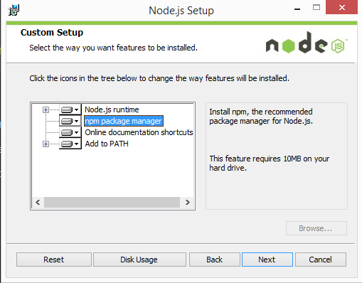
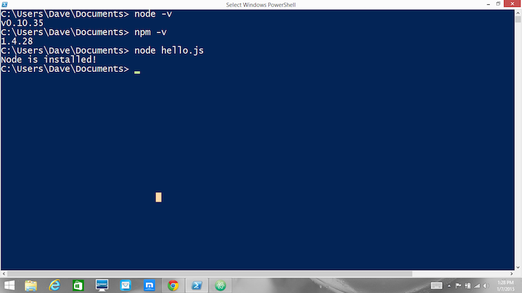

Install node in windows
- Download the Windows installer from the Nodes.js® web site.
- Run the installer (the .msi file you downloaded in the previous step.)
-
Follow the prompts in the installer (Accept the license agreement, click the NEXT button a bunch of times and accept the default installation settings).

- Restart your computer. You won’t be able to run Node.js® until you restart your computer.
Test it!
Make sure you have Node and NPM installed by running simple commands to see what version of each is installed and to run a simple test program:
-
Test Node. To see if Node is installed, open the Windows Command Prompt, Powershell or a similar command line tool, and type node -v. This should print a version number, so you’ll see something like this v0.10.35.
-
Test NPM. To see if NPM is installed, type npm -v in Terminal. This should print NPM’s version number so you’ll see something like this 1.4.28
-
Create a test file and run it. A simple way to test that node.js works is to create a JavaScript file: name it hello.js, and just add the code console.log(‘Node is installed!’);. To run the code simply open your command line program, navigate to the folder where you save the file and type node hello.js. This will start Node and run the code in the hello.js file. You should see the output Node is installed!.

How to Update Node and NPM
This is the new best way to upgrade npm on Windows.
- Run PowerShell as Administrator
Set-ExecutionPolicy Unrestricted -Scope CurrentUser -Force
npm install -g npm-windows-upgrade
npm-windows-upgrade
Note: Do not run npm i -g npm. Instead use npm-windows-upgrade to update npm going forward. Also if you run the NodeJS installer, it will replace the node version.
- Upgrades npm in-place, where node installed it.
- Easy updating, update to the latest by running npm-windows-upgrade -p -v latest.
- Does not modify the default path.
- Does not change the default global package location.
- Allows easy upgrades and downgrades.
- Officially recommended by the NPM team.
- A list of versions matched between NPM and NODE (https://nodejs.org/en/download/releases/) - but you will need to download NODE INSTALLER and run that to update node (https://nodejs.org/en/)